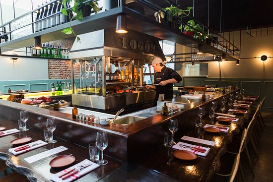

Quienes somos...

Somos un acogedor restaurante que nació como un sueño en una modesta cafetería el 3 de Julio de 2010 y que se ha construido y mejorado; y a partir del 5 de Abril de 2016 en nuestra actual ubicación para brindar una oferta de platos típicos, así como también diferentes opciones para satisfacer sus antojos. Estamos ubicados en pleno corazón de Túquerres, en el departamento de Nariño; al suroccidente de Colombia; contamos con un espacio finamente decorado con estilo moderno, donde podrá apreciar calidad y el toque diferente de sus platos preparados con selectos ingredientes, asimismo podrá degustar la suculenta cocina típica, pastas, y pescados de la mejor calidad. Martino's Restaurante, es una fiesta en el paladar, un juego para las pupilas, es un punto de reunión de negocios y de complicidad.
El municipio, y su cabecera municipal, se constituyen en un importante centro de comercio para una vasta región agrícola en el nudo de los Pastos, de la cordillera de los Andes en la sabana de su mismo nombre. Se caracteriza por la belleza de sus paisajes, amabilidad de sus gentes, folclor, cultura, gastronomía y su principal atracción turística: el volcán Azufral, de fácil acceso. Es el cuarto municipio en importancia en el departamento de Nariño y constituye un epicentro comercial, financiero y económico para municipios aledaños. Esta ubicado a 72 kilómetros aproximadamente de San Juan de Pasto, la capital del departamento.
La chef nos ofrece una carta moderna de cocina internacional, todos los días experimenta una divertida fusión de los sabores y colores de la cocina típica colombiana, además incluye diferentes ingredientes de la cocina popular, creando de esta manera platillos muy especiales con mucho sabor, como el exquisito FRITO PASTUSO, PARRILLADAS, COSTILLAS DE CERDO EN SALSA BBQ y mucho más.
Somos una empresa familiar, con alto conocimiento en la producción y venta de alimentos; la experiencia adquirida a través de los años, nos da el conocimiento para valorar la importancia del cliente, quien es el motivo de nuestros esfuerzos, y así llegar con la seguridad de poder ofrecer productos de excelente calidad con responsabilidad y cumplimiento. Contamos con excelente calidad humana que brinda la atención apropiada.